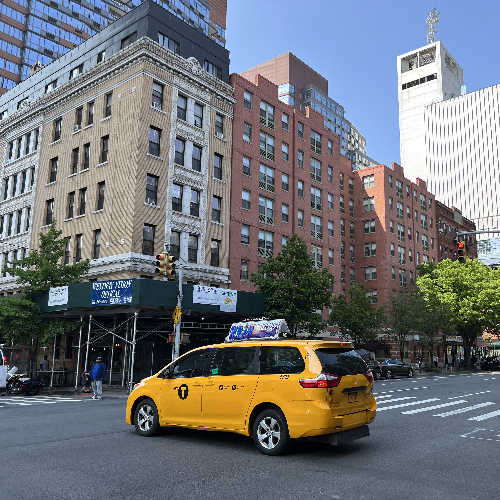
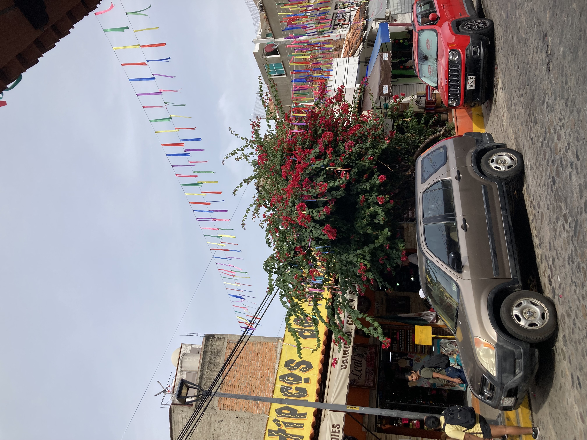
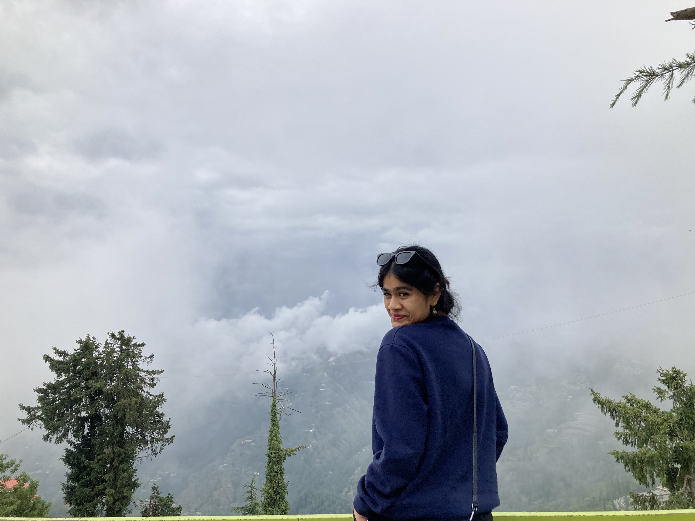

Recent Adventures
  I enjoy taking trips with my family or to see family! Recently, I have gone on a few incredible family trips across the globe. Anytime spent with the people I live is time well spent, but beautiful views and sunny beaches certainly make that time better!
Places I reccomend
- Mumbai, India
- Himachal Pradesh, India
- New York City, U.S.A.
- Puerto Vallarta, Mexico